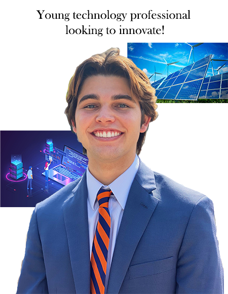

My name is Mikey McCallister and I am currently studying Information Management and Technology through the School of Information Studies at Syracuse University. Through my concentration of data analytics I became interested in healthcare and climate change statistics because our society has very big changes to make in both of those departments. At Syracuse I have to tried to get as involved as I can. I became a peer advisor for the iSchool during my sophomore year helping freshmen become accustom to the university. I also joined the professional technology fraternity through the iSchool, Kappa Theta Pi, which I am now the president of. Through classes at the iSchool I have built skills in different technical coding languages such as Python, R, and SQL while also reinforcing leadership and communication skills through project management courses.
I am originally from Los Angeles and my family still lives out there. I have two younger sisters, one is a freshman in high school and the other is a sophomore in college at UCLA. I also have two dogs named Maise and Noodles. Outside of school I love to be active, some of my favorite things to do are go surfing, snowboarding, go on hikes and camping trips, and just go to beach. My favorite TV shows are Curb Your Enthusiasm, Silicon Valley, and Community.
Personal Information
When I am not working on school work or school activities you can find him hanging out with his friends, listening to music, or watching TV. while at home he loves to go to the beach and surf.
Hobbies
- Surfing
- Snowboarding
- Listening to music
- Videogames
- Driving
- Watching TV/Movies